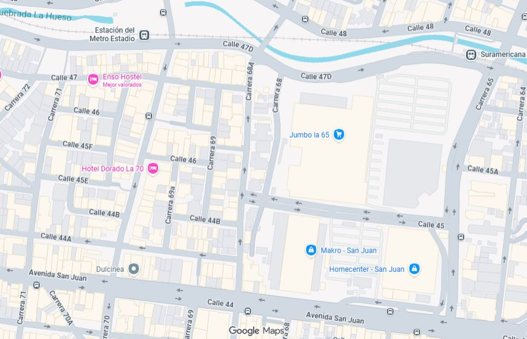

Nombre Apellido
Presidentecorreo@correo.com
Conoce nuestra Junta de Acción Comunal, sus integrantes y el trabajo que realizamos por la comunidad.
La Junta de Acción Comunal Florida Las Mercedes trabaja por el bienestar, la participación y el desarrollo comunitario, promoviendo espacios de convivencia y fortaleciendo el territorio mediante el trabajo conjunto con la comunidad.
Nuestro compromiso es generar soluciones, escuchar las necesidades de los habitantes y construir iniciativas que mejoren la calidad de vida del sector.
Ubicación general y delimitación territorial de la Junta de Acción Comunal Florida Las Mercedes.

Estructura organizativa de la Junta de Acción Comunal Florida Las Mercedes.
Periodo de gestión administrativa de la Junta de Acción Comunal Florida Las Mercedes.
correo@correo.com

correo@correo.com
correo@correo.com